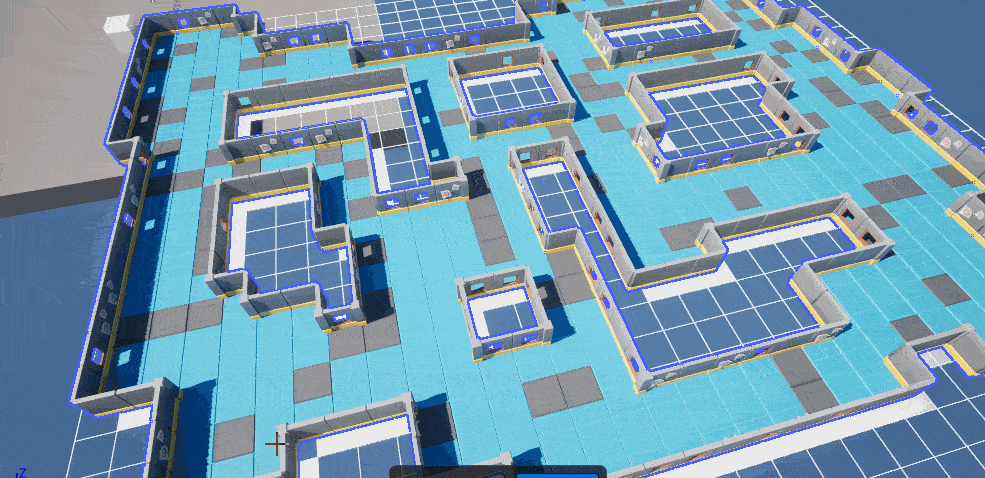
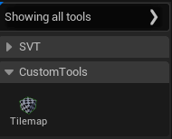
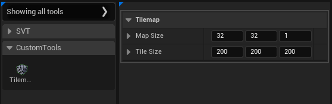
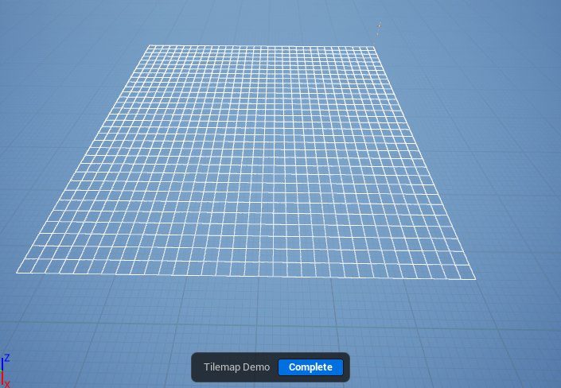
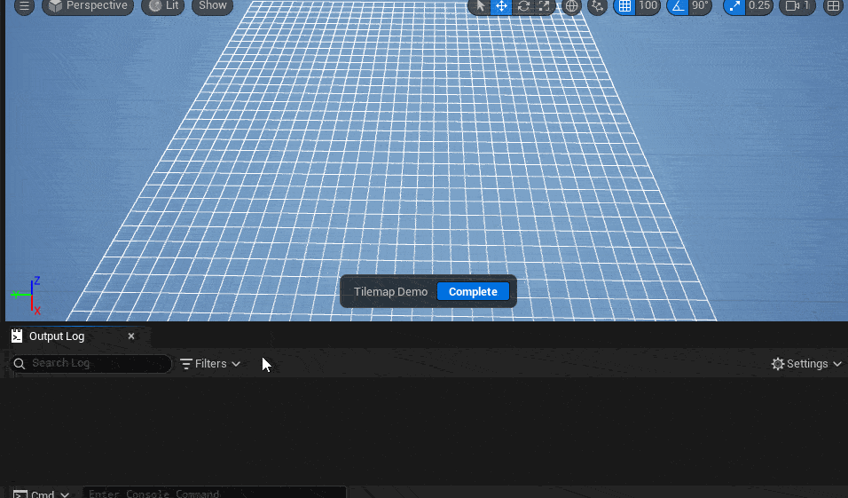
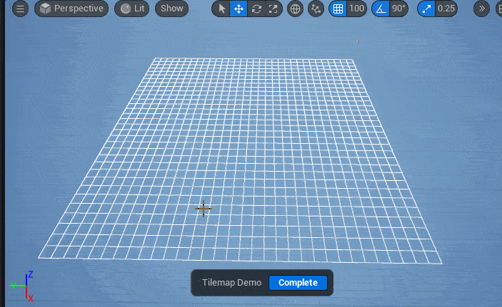
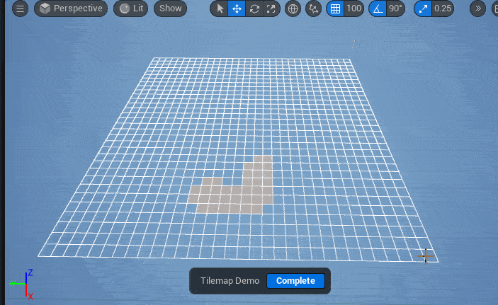

My first Scriptable Tool - Tilemap Draw Tool
I was super excited when Scriptable Tools were introduced in the Unreal Engine 5. Back then, I was thinking "This can be used to create a Tilemap in 3D". I started working on it, but there weren't many resources that I can follow at that time.
In 2025, Unreal Engine youtube channel release a video introducing Geometry Scripting and Scriptable Tools, though when I watched it, there is no mention on Geometry Scripting  . But, the Scriptable Tool have a lot of new feature as I'm aware, and the blocker that I have before, now it can be solved! They've added awesome debugging tools like LineSet and TriangleSet! At the end of the video, they showcasing that the dungeon actually created with the help of the custom Scriptable Tools. But bummer - they didn't show how they built it
. But, the Scriptable Tool have a lot of new feature as I'm aware, and the blocker that I have before, now it can be solved! They've added awesome debugging tools like LineSet and TriangleSet! At the end of the video, they showcasing that the dungeon actually created with the help of the custom Scriptable Tools. But bummer - they didn't show how they built it  .
.
So here we go, I've been working to create Tilemap Draw Tool similar to the showcase in the video and this is the result

First step to create Custom Scriptable Tool
Before go into deep, I suggest you guys to watch the video and read the official documentation to get started. This article more focus on how I create the tilemap tool.
Create Settings class to store the configuration
Create a new C++ class, let's call it UDemoTilemapPropertySet to store the configuration.
#pragma once
#include "CoreMinimal.h"
#include "ScriptableInteractiveTool.h"
#include "TilemapPropertySet.generated.h"
UCLASS()
class DEMOEDITORTOOL_API UDemoTilemapPropertySet : public UScriptableInteractiveToolPropertySet
{
GENERATED_BODY()
public:
UPROPERTY(EditAnywhere, BlueprintReadOnly, Category = "Tilemap")
FIntVector MapSize {32, 32, 1};
UPROPERTY(EditAnywhere, BlueprintReadOnly, Category = "Tilemap")
FIntVector TileSize {200, 200, 200};
};
Create the Scriptable Tool class
Let's create a new class, let's call it UDemoTilemapTool. This will be our new Scriptable Tool.
#pragma once
#include "CoreMinimal.h"
#include "BaseTools/ScriptableModularBehaviorTool.h"
#include "DemoTilemapTool.generated.h"
UCLASS(Transient, Blueprintable)
class DEMOEDITORTOOL_API UDemoTilemapTool : public UScriptableModularBehaviorTool
{
GENERATED_BODY()
public:
UDemoTilemapTool();
}
UDemoTilemapTool::UDemoTilemapTool()
{
// Setting up the tool information
ToolName = FText::FromString(TEXT("Tilemap"));
ToolLongName = FText::FromString(TEXT("Tilemap Designer"));
bShowToolInEditor = true;
}
Basically, you've already create a new Custom Scriptable Tool called Tilemap, to verify this, you can compile and open the Scriptable Tool section, it will look like this

Register Settings
We will utilize the UDemoTilemapPropertySet Settings that we've already created. This will shown in the Scriptable Tool section.
class DEMOEDITORTOOL_API UDemoTilemapTool : public UScriptableModularBehaviorTool
{
public:
UDemoTilemapTool();
virtual void Setup() override;
UPROPERTY()
class UDemoTilemapPropertySet* Settings;
protected:
UFUNCTION()
void HandlePropertyModified(UScriptableInteractiveToolPropertySet* PropertySet, FString PropertyName);
#include "DemoTilemapPropertySet.h"
void UDemoTilemapTool::Setup()
{
EToolsFrameworkOutcomePins OutResult;
Settings = Cast<UDemoTilemapPropertySet>(AddPropertySetOfType(UDemoTilemapPropertySet::StaticClass(), TEXT("Settings"), OutResult));
if (OutResult == EToolsFrameworkOutcomePins::Failure)
{
return;
}
RestorePropertySetSettings(Settings, TEXT("TilemapSettings"));
FToolPropertyModifiedDelegate PropertyChangedDelegate;
PropertyChangedDelegate.BindDynamic(this, &UDemoTilemapTool::HandlePropertyModified);
WatchProperty(Settings, TEXT("TileSize"), PropertyChangedDelegate);
WatchProperty(Settings, TEXT("MapSize"), PropertyChangedDelegate);
WatchProperty(Settings, TEXT("TilemapDebugMaterial"), PropertyChangedDelegate);
}
void UDemoTilemapTool::HandlePropertyModified(UScriptableInteractiveToolPropertySet* PropertySet, FString PropertyName)
{
UDemoTilemapPropertySet* SettingProp = Cast<UDemoTilemapPropertySet>(PropertySet);
if (SettingProp == nullptr)
{
return;
}
SavePropertySetSettings(SettingProp, TEXT("TilemapSettings"));
}
Let's breakdown the code above.
Setup()was called when you start selecting the tool, in this caseTilemaptool. This function is the start point to initialize anything you need.- As you can see, we start by calling
AddPropertySetOfType, this will register our PropertySet to be used as Tilemap Settings. - If everything goes well, we start to restore the property value (if any) by calling
RestorePropertySetSettings. - Don't forget to watch the property by calling
WatchPropertyand passing the delegate function, you need to callSavePropertySetSettingswhen the value changed, this will ensure the next time you activate the Tilemap tool, the property will restore correctly.

Draw Grid
We will utilize the UDemoTilemapTool::Render to draw the grid. This function offer basic render such as line draw.
class DEMOEDITORTOOL_API UDemoTilemapTool : public UScriptableModularBehaviorTool
{
public:
...
virtual void Setup() override;
virtual void Render(IToolsContextRenderAPI* RenderAPI) override;
...
#include "ToolDataVisualizer.h"
void UDemoTilemapTool::Render(IToolsContextRenderAPI* RenderAPI)
{
FToolDataVisualizer Renderer;
Renderer.BeginFrame(RenderAPI);
const FIntVector TileSize = Settings->TileSize;
const int32 Depth = Settings->TileSize.X * Settings->MapSize.X;
const int32 Width = Settings->TileSize.Y * Settings->MapSize.Y;
// Draw grid
for (int32 X = 0; X <= Settings->MapSize.X; X++)
{
Renderer.DrawLine(FVector(X * TileSize.X, 0, 0), FVector(X * TileSize.X, Width, 0), FLinearColor::White);
}
for (int32 Y = 0; Y <= Settings->MapSize.Y; Y++)
{
Renderer.DrawLine(FVector(0, Y * TileSize.Y, 0), FVector(Depth, Y * TileSize.Y, 0), FLinearColor::White);
}
Renderer.EndFrame();
Super::Render(RenderAPI);
}
Don't worry if the math looks scary - it's just calculating where to draw lines between tiles! Here's what you'll see after this code

Working with Tool Interactions
There is multiple interaction you can do with the Editor Behaviour Tool, for tilemap tool, you will need to utilize AddClickDragBehavior. This support click and drag input, so you can continue draw the tilemap with mouse down button.
private:
UFUNCTION()
FInputRayHit HandleBeginClickDragSequence(FInputDeviceRay PressPos, FScriptableToolModifierStates Modifiers, EScriptableToolMouseButton MouseButton);
void UDemoTilemapTool::Setup()
{
...
WatchProperty(Settings, TEXT("TilemapDebugMaterial"), PropertyChangedDelegate);
FTestCanBeginClickDragSequenceDelegate BeginClickDragSequenceDelegate;
BeginClickDragSequenceDelegate.BindDynamic(this, &UDemoTilemapTool::HandleBeginClickDragSequence);
AddClickDragBehavior(
BeginClickDragSequenceDelegate,
FOnClickPressDelegate(),
FOnClickDragDelegate(),
FOnClickReleaseDelegate(),
FOnTerminateDragSequenceDelegate(),
FMouseBehaviorModiferCheckDelegate());
}
FVector UDemoTilemapTool::CalculateIntersection(const FVector& Origin, const FVector& Direction, int32 ZFloor)
{
FVector Intersection = FVector::Zero();
if (FMath::IsNearlyZero(Direction.Z))
{
if (FMath::IsNearlyZero(Origin.Z, ZFloor))
{
Intersection = Origin;
}
}
else
{
Intersection = Origin + Direction * ((ZFloor - Origin.Z) / Direction.Z);
}
return Intersection;
}
FInputRayHit UDemoTilemapTool::HandleBeginClickDragSequence(FInputDeviceRay PressPos,
FScriptableToolModifierStates Modifiers, EScriptableToolMouseButton MouseButton)
{
if (MouseButton != EScriptableToolMouseButton::LeftButton)
{
return FInputRayHit();
}
FVector Intersection = CalculateIntersection(PressPos.WorldRay.Origin, PressPos.WorldRay.Direction, 0);
return UScriptableToolsUtilityLibrary::MakeInputRayHit(FVector::Distance(Intersection, PressPos.WorldRay.Origin), nullptr);
}
Here's the deal with this code...
- In the
Setup()function, we addAddClickDragBehaviorcall to register the mouse input. - We also register a delegate and it will call
UDemoTilemapTool::HandleBeginClickDragSequence. This function will determine if the input is valid or not by returningFInputHitRay. - We add a new function called
CalculateIntersectionto calculate the intersection coordinate from the mouse ray toZFloor == 0.
Now, we have the intersection coordinate, we need to handle the FOnClickPressDelegate, FOnClickDragDelegate.
...
FInputRayHit HandleBeginClickDragSequence(FInputDeviceRay PressPos, FScriptableToolModifierStates Modifiers, EScriptableToolMouseButton MouseButton);
UFUNCTION()
void HandleClick(FInputDeviceRay MousePos, FScriptableToolModifierStates Modifiers, EScriptableToolMouseButton MouseButton);
void UDemoTilemapTool::Setup()
{
BeginClickDragSequenceDelegate.BindDynamic(this, &UDemoTilemapTool::HandleBeginClickDragSequence);
FOnClickPressDelegate OnClickPressDelegate;
OnClickPressDelegate.BindDynamic(this, &UDemoTilemapTool::HandleClick);
FOnClickDragDelegate OnClickDragDelegate;
OnClickDragDelegate.BindDynamic(this, &UDemoTilemapTool::HandleClick);
AddClickDragBehavior(
BeginClickDragSequenceDelegate,
OnClickPressDelegate,
OnClickDragDelegate,
FOnClickReleaseDelegate(),
FOnTerminateDragSequenceDelegate(),
FMouseBehaviorModiferCheckDelegate());
}
void UDemoTilemapTool::HandleClick(FInputDeviceRay MousePos, FScriptableToolModifierStates Modifiers,
EScriptableToolMouseButton MouseButton)
{
if (MouseButton != EScriptableToolMouseButton::LeftButton)
{
return;
}
FVector Intersection = CalculateIntersection(MousePos.WorldRay.Origin, MousePos.WorldRay.Direction, 0);
FIntVector Coord{};
Coord.X = Intersection.X / Settings->TileSize.X;
Coord.Y = Intersection.Y / Settings->TileSize.Y;
// Out of Bounds
if (Coord.X < 0 || Coord.Y < 0
|| Coord.X >= Settings->MapSize.X || Coord.Y >= Settings->MapSize.Y
)
{
return;
}
UE_LOG(LogTemp, Log, TEXT("Tilemap Coord: %f, %f"), Intersection.X, Intersection.Y)
}
What this basically does is...
- In
Setupfunction, we add another delegate and it will callUDemoTilemapTool::HandleClickwhen user start press mouse left button and dragging it. UDemoTilemapTool::HandleClickwill calculate the intersection coordinate, and for testing, we will print out the coordinate to the Output Log.
Let see if our tools is working as expected, activate the Tilemap Demo tool and open the output log.

Draw Active Tiles
Now, that we are able interacting with the Level Editor, one thing that left is draw the active tiles. We will utilize the UScriptableToolTriangleSet to draw the Active Tiles.
...
protected:
UFUNCTION()
void HandlePropertyModified(UScriptableInteractiveToolPropertySet* PropertySet, FString PropertyName);
UPROPERTY(BlueprintReadOnly)
TSet<FIntVector> TempActiveTiles;
...
private:
...
void HandleClick(FInputDeviceRay MousePos, FScriptableToolModifierStates Modifiers, EScriptableToolMouseButton MouseButton);
UPROPERTY()
UScriptableToolTriangleSet* TriangleSet = nullptr;
UPROPERTY()
TMap<FIntVector, class UScriptableToolQuad*> Quads;
void DrawTile(const FIntVector& Coord);
#include "Drawing/ScriptableToolTriangle.h"
#include "Drawing/ScriptableToolTriangleSet.h"
void UDemoTilemapTool::Setup()
{
...
WatchProperty(Settings, TEXT("TilemapDebugMaterial"), PropertyChangedDelegate);
TriangleSet = AddTriangleSet();
...
}
void UDemoTilemapTool::HandleClick(FInputDeviceRay MousePos, FScriptableToolModifierStates Modifiers,
EScriptableToolMouseButton MouseButton)
{
...
// Out of Bounds
if (Coord.X < 0 || Coord.Y < 0
|| Coord.X >= Settings->MapSize.X || Coord.Y >= Settings->MapSize.Y
)
{
return;
}
if (!TempActiveTiles.Contains(Coord))
{
TempActiveTiles.Add(Coord);
DrawTile(Coord);
}
}
void UDemoTilemapTool::DrawTile(const FIntVector& Coord)
{
if (Quads.Contains(Coord))
{
//Skip
return;
}
FVector P1 = FVector(Coord.X * Settings->TileSize.X, Coord.Y * Settings->TileSize.Y, Coord.Z * Settings->TileSize.Z);
FVector P2 = FVector(Coord.X * Settings->TileSize.X, (Coord.Y + 1) * Settings->TileSize.Y, Coord.Z * Settings->TileSize.Z);
FVector P3 = FVector((Coord.X + 1) * Settings->TileSize.X, (Coord.Y + 1) * Settings->TileSize.Y, Coord.Z * Settings->TileSize.Z);
FVector P4 = FVector((Coord.X + 1) * Settings->TileSize.X, Coord.Y * Settings->TileSize.Y, Coord.Z * Settings->TileSize.Z);
UScriptableToolQuad* Quad = TriangleSet->AddQuad();
Quad->SetQuadPoints(P1, P2, P3, P4);
Quad->SetQuadNormals(FVector::UpVector, FVector::UpVector, FVector::UpVector, FVector::UpVector);
Quads.Add(Coord, Quad);
}
Caching Active Tiles
Heads up! In this article, we only cache the active tiles in the UDemoTilemapTool. This is not real world use case!
In a real project, you should save the active tiles into an Actor, UObject, or maybe DataAsset!
The TempActiveTiles will be cleanup after pressing complete button.
Here's what's happening here:
- We create a new variable call
TempActiveTiles, this will store the active tiles. Since we save this to the Tool class, it will clean up right after the you've done using the tool. - We add
UScriptableToolTriangleSet* TriangleSet, this have responsibilities to store the Quad that we've drawn. - In the
UDemoTilemapTool::HandleClick, we need to be carefull to always check theTempActiveTiles, if it contains theCoord, we should ignore it to prevent double quad at the same coordinate.

Pretty neat, right?
Remove Active Tiles
Now we can add active tiles and draw the quad, but we don't have ability to remove active tiles. We will use Shift + Left Click to remove the active tile
void UDemoTilemapTool::HandleClick(FInputDeviceRay MousePos, FScriptableToolModifierStates Modifiers,
EScriptableToolMouseButton MouseButton)
{
...
// Out of Bounds
if (Coord.X < 0 || Coord.Y < 0
|| Coord.X >= Settings->MapSize.X || Coord.Y >= Settings->MapSize.Y
)
{
return;
}
if (!TempActiveTiles.Contains(Coord) && !Modifiers.bShiftDown)
{
TempActiveTiles.Add(Coord);
DrawTile(Coord);
}
else if (TempActiveTiles.Contains(Coord) && Modifiers.bShiftDown)
{
TempActiveTiles.Remove(Coord);
TriangleSet->RemoveQuad(*Quads.Find(Coord));
Quads.Remove(Coord);
}
}

Hope this helps you create something awesome too!